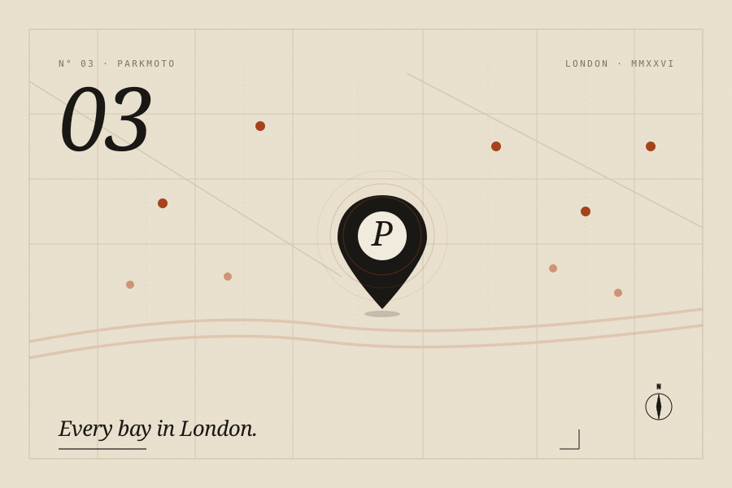

ParkMoto
Every motorbike parking bay in London on one map. No sign-up, no ads, no tracking.

The problem
London has thousands of motorbike parking bays, but the information about them is scattered. Some is on council websites, some in TfL's tooling (usually out of date), some buried in borough PDFs. If you ride, you know the drill. You end up circling a block looking for faded M/C paint on the road, hoping the rules haven't changed since it was put there.
ParkMoto puts them all on one map. It knows which borough you're in and what the fee rules are there. Tap a bay and it'll open Google Maps or Waze straight to it. If a bay is missing or wrong, you can fix it in a couple of taps, and the correction goes back to OpenStreetMap so everyone benefits, not just people using ParkMoto.
There's no sign-up, no tracking, and no ads. I use your location once when you report something, then forget it. It's a map, it's free, and it works.
What it does
Every London bay on one map
Data comes from OpenStreetMap, with the borough-specific fee rules layered on top. You can filter to free, paid, or covered bays, and save the ones you use.
Report a problem in seconds
Missing bay? Gone? Wrong fee? Three taps and it's reported. If you have an OpenStreetMap account, you can optionally jump straight to their editor and fix it yourself.
One tap to navigate
Opens Google Maps or Waze directly to any bay. I made it so you can use it with gloves on at a red light, because that's when you actually need it.
Works like an app
Add it to your home screen and it behaves like any other app. Works offline once you've used it, and loads fast when you open it again. No App Store involved.
Private by default
No accounts, no analytics, no tracking. Your location is only used at the moment you report something, and it isn't stored anywhere.
The stack
Elsewhere